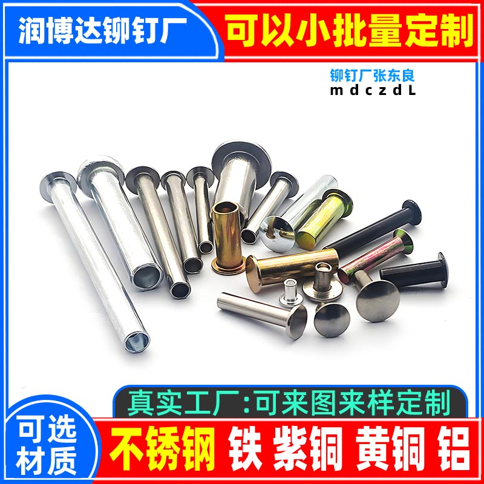

<!--加粗--><strong><!--加粗-->
<!--字体大小--><span style="font-size: 18px;"><!--字体大小-->

<!--无下划线开始--><head>
<style type="text/css">
A{TEXT-DECORATION: none}
</style><!--无下划线开始-->

            <!--图标--><link rel="Shortcut Icon" href="./favicon.ico" type="image/x-icon" />
            <!--大图标--><link rel="apple-touch-icon-precomposed" href="./favicon.ico"><!--图标-->

            <!--手机版本代码--><meta name="viewport" content="width=device-width,  user-scalable=yes" /><!--手机版本代码-->

            <!--网页乱码修复--><html><head><meta http-equiv="Content-Type" content="text/html; charset=UTF-8"><!--网页乱码修复-->

            <!--国家地区--><meta http-equiv='content-language' content='zh-cn'>


<!--主题-->                              <h1>异形铆钉厂</h1>
                                      <title>异形铆钉厂一铆钉厂公平村客家人艺名网民</title><!--标题-->
<!--关键词--> <meta name="keywords" content="异形铆钉厂,艺名张先生,铆钉厂张东良,铆钉厂,铆钉厂张先生,公平村张先生,张先生,公平村,铆钉,客家人张先生,生产,铁铆钉,不锈钢铆钉,铝铆钉,黄铜铆钉,紫铜铆钉" /><!--关键词-->
<!--描述--><meta name="description" content="异形铆钉厂,艺名张先生,铆钉厂张东良" />

<!--分界线--><hr color=0000ff> <!--分界线-->

<!--内容开始-->


<!--居中--><center><!--居中-->

<a href="./5004.html" target="_blank">异形铆钉厂</a><hr/>

<textarea cols="40%" rows="30%" id="biao1">
异形铆钉

可生产材质：不锈钢、铜、铁、铝

可生产尺寸： 直径：1.5-10MM
            长度：3-140MM
            帽径：2.5-18MM
可生产头型：圆头、平头、平锥头、沉头、特殊头型定制

可生产：异形铆钉、环槽铆钉、钻孔铆钉……

表面可电镀：镀镍、黑镍、白锌、兰锌（蓝锌）、锡
黑锌、彩锌、铬、银、烤漆

异形铆钉、特殊铆钉定制、环槽铆钉、割槽铆钉、钻孔铆钉
特殊头型铆钉定制及相关热门词……

</textarea>


<hr/>
</a>

</a>

<hr/>


<hr color=0066FF>
日期:2017年11月17日

<hr color=0066FF>
<!--页脚-->
<br/>
<br/>
<br/>
<br/>


<link rel="stylesheet" href="/a/js/xhx.css"><!--无下划线-->
<link rel="stylesheet" href="/a/js/h.css"><!--无下划线-->
<!-- 页脚页眉 放这里最完美 --><script src="/a/js/ym.js"></script>
<!-- ico 放这里最完美 --><script src="/a/js/ico.js"></script>
<!-- yj2 放这里最完美 --><script src="/a/js/yj2.js"></script>

<!-- 页脚脚本 放这里最完美 --><script src="/a/js/yj.js"></script>


<link rel="stylesheet" href="/a/js/bj.css"><!--全局页面样式-->
</body>
</html>

<!--居中--><style type="text/css">       
      body {
          max-width: 800px;
          margin: 0 auto;
          padding: 20px;
          line-height: 1.7;
          background-color: #f8f9fa;
          color: #333;
      }          
       </style><!--居中-->